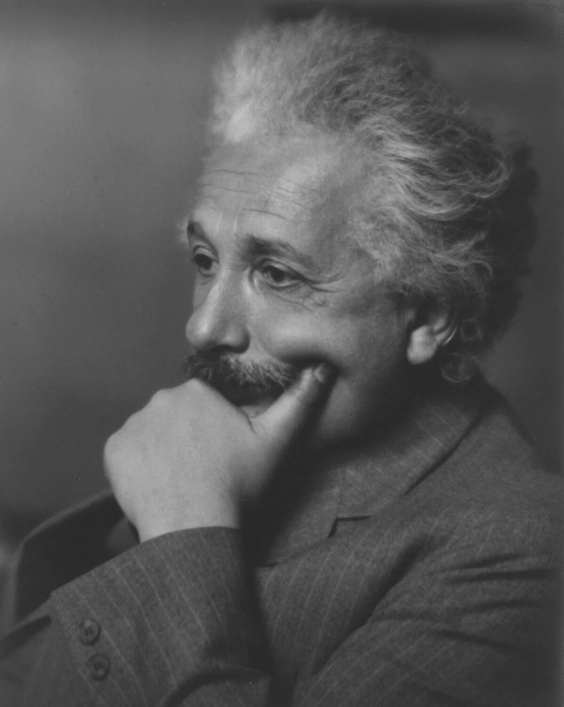
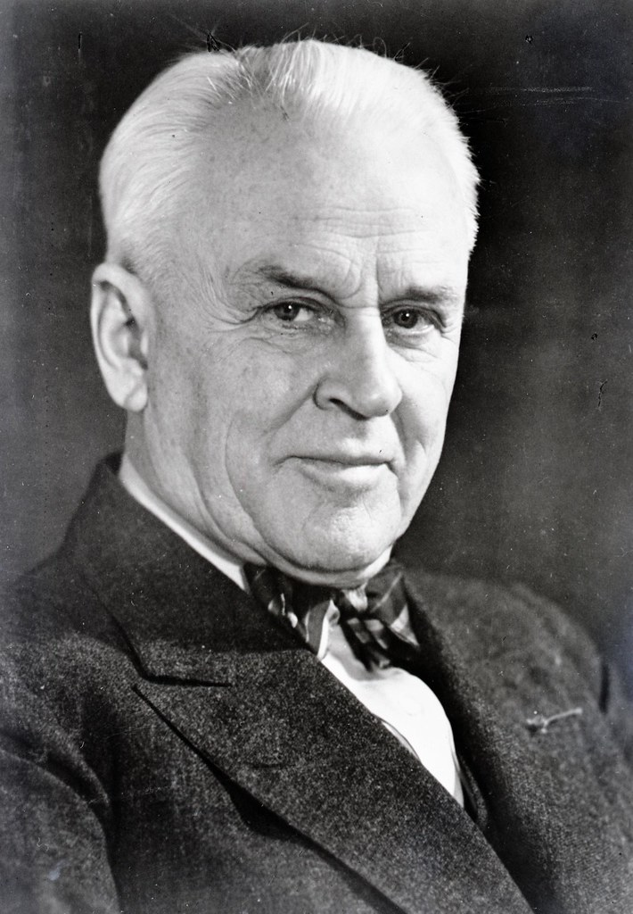
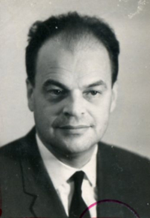
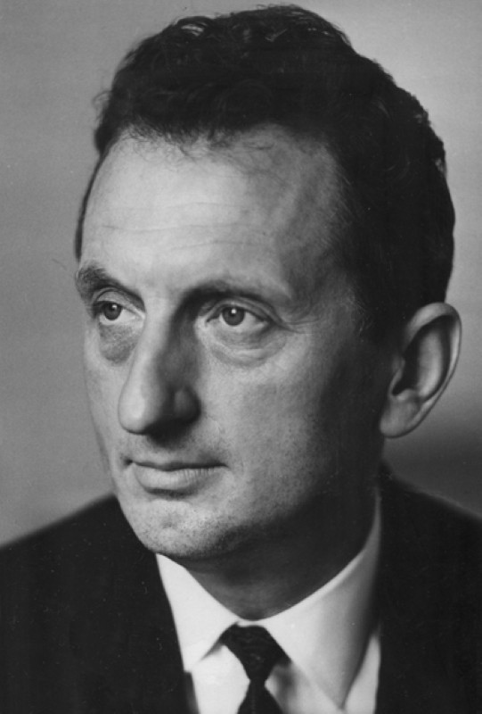
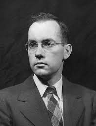

Артур Холли Комптон (10 сентября 1892 – 15 марта 1962) был американским физиком, чей вклад в развитие физики оказал огромное влияние на науку. Его наиболее известным достижением стало открытие эффекта, названного в его честь, который доказал корпускулярную природу света и подтвердил теорию квантования электромагнитного излучения. Это открытие имело глубокие последствия для понимания волновой-частицевой дуализма света и привело к развитию квантовой физики. За свои работи в этой области, Комптон был удостоен Нобелевской премии по физике в 1927 году. Он также провел много лет своей научной карьеры в Университете Чикаго, где он занимался исследованиями в области рентгеновского излучения и ядерной физики. Кроме того, он был активным ученым-популяризатором и автором нескольких книг, включая "Атомное приключение" и "Человек и атом". Таким образом, Артур Холли Комптон сделал значительный вклад в физику, особенно благодаря своему открытию эффекта Комптона, которое имело важное значение для развития квантовой физики и помогло углубить наше понимание природы света.
Альберт Эйнштейн (14 марта 1879 – 18 апреля 1955) был немецким физиком, чей вклад в развитие физики оказал огромное влияние на науку. Его наиболее известные достижения включают разработку теории относительности, которая изменила представление о пространстве, времени и гравитации. Теория относительности Эйнштейна стала одной из основополагающих теорий в физике и нашла множество практических применений, включая разработку ядерной энергии и глобальной системы навигации GPS. Кроме того, Эйнштейн внес важный вклад в развитие квантовой физики и теории фотоэффекта, что привело к пониманию корпускулярно-волновой дуализма света. Его работы также способствовали развитию атомной физики и пониманию внутренней структуры атома. В 1921 году Альберт Эйнштейн был удостоен Нобелевской премии по физике за его работы по теории фотоэффекта. Его вклад в физику остается важным и вдохновляет ученых по всему миру до сегодняшнего дня.
Роберт Эндрюс Милликен(22 марта 1868 – 19 декабря 1953), американский физик, оказал значительное влияние на развитие физики благодаря своим исследованиям. Его измерения элементарного электрического заряда с помощью "эксперимента с маслом" позволили ему определить точное значение заряда электрона, что стало важным шагом в понимании структуры атома. Кроме того, Милликен провел значительные исследования в области фотоэффекта, что привнесло новые знания о влиянии света на материалы. Он также внес вклад в изучение физики космических лучей, исследуя свойства и происхождение этих высокоэнергетических частиц. За свои научные достижения Роберт Эндрюс Милликен был удостоен Нобелевской премии по физике в 1923 году, а также получил другие престижные награды, такие как Комстоковская премия по физике и медаль Эдисона IEEE.
Николай Геннадиевич Басов (14 декабря 1922 — 1 июля 2001) был выдающимся советским и российским физиком, чей вклад в развитие физики оказал огромное значение. Он является одним из создателей лазера и одним из основоположников квантовой электроники. В 1964 году Николай Басов вместе с Александром Прохоровым и Чарльзом Таунсом получил Нобелевскую премию по физике за разработку принципов работы и построение молекулярного лазера. Это открытие стало важным шагом в развитии лазерной технологии и нашло широкое применение в науке, медицине, промышленности и других областях. Басов также внес значительный вклад в разработку полупроводниковых лазеров. Он предложил идею создания различных типов полупроводниковых лазеров и в 1962 году выдвинул концепцию инжекционного лазера. Эти разработки стали основой для современных полупроводниковых лазеров, которые широко используются в оптической связи, информационных технологиях и других областях.
Александр Михайлович Прохоров (11 июля 1916 года — 8 января 2002 года) был выдающимся российским физиком, чей вклад в развитие физики оказал огромное значение. Он является одним из создателей лазера и одним из основоположников квантовой электроники.Работы Прохорова также связаны с физикой твердого тела, спектроскопией и физикой магнитных явлений. Он внес крупный вклад в эти разделы радиофизики, физики твердого тела и спектроскопии. Его исследования и разработки стали основой для многих современных технологий и приборов
Чарлз Хард Таунс (28 июля 1915 – 27 января 2015) был американским физиком, который внес значительный вклад в развитие физики. Он совершил важные открытия и разработки в области микроволновой астрономии, астрохимии и лазерной физики. Таунс начал разрабатывать устройства для микроволновой астрономии, что позволило ему проводить исследования в области космической астрофизики и изучать свойства различных объектов во Вселенной. Он также внес важный вклад в область астрохимии, расширяя наши знания о химических процессах, происходящих в космических объектах, таких как звезды и галактики.аунс стал первым ученым, который смог создать и использовать молекулярный лазер. Это открытие имело огромное значение для развития лазерной технологии и нашло широкое применение в науке, медицине, промышленности и других областях.